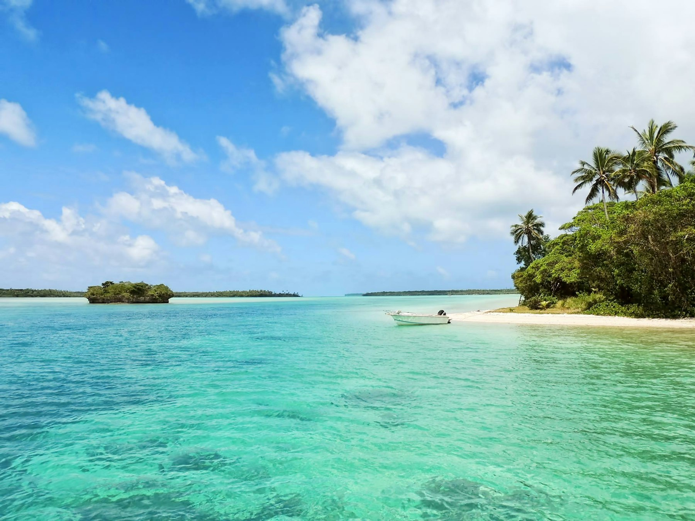

Overview計畫概述
Structural complexity — the three-dimensional architecture of a reef — is widely considered a cornerstone of reef fish diversity. However, measuring complexity accurately across sites has historically been difficult. This project applied Structure-from-Motion (SfM) photogrammetry to generate detailed 3D reef models at 18 sites spanning a gradient of disturbance history, then related the complexity metrics to fish assemblage data from paired underwater visual censuses.
結構複雜度——珊瑚礁的三維架構——被普遍認為是礁魚多樣性的基石。然而，跨礁點準確量測複雜度歷來困難重重。本計畫應用運動恢復結構（SfM）攝影測量法，在 18 個不同干擾歷史的礁點生成詳細的三維礁體模型，再將複雜度指標與配對水下目視調查的魚類群聚資料相關聯。
Key Findings主要發現
- 3D rugosity derived from SfM models was a stronger predictor of fish species richness than traditional chain-and-tape rugosity or coral cover estimates alone.
由 SfM 模型衍生的三維粗糙度，比傳統鏈尺測量法或單獨的珊瑚覆蓋率估算，更能預測魚類物種豐富度。 - The relationship between complexity and fish diversity was non-linear, with diminishing returns in high-complexity, undisturbed reefs.
複雜度與魚類多樣性的關係呈非線性，在高複雜度、未受干擾的礁體中出現報酬遞減現象。 - Disturbance history was the most important factor structuring fish assemblages at the among-site scale, operating largely through its effects on structural complexity.
干擾歷史是礁點間規模魚類群聚結構最重要的因素，主要透過其對結構複雜度的影響而起作用。 - This work contributed to the development of habtools (Schiettekatte et al. 2025, Methods in Ecology and Evolution), an open-source R package that standardises the calculation of 3D metrics — including fractal dimension, rugosity, and convexity — from photogrammetric surface models and point clouds, making these analyses reproducible and accessible across reef systems globally.
本計畫的研究成果促成了 habtools（Schiettekatte et al. 2025，Methods in Ecology and Evolution）的開發，這是一套開源 R 套件，標準化了從攝影測量表面模型與點雲計算三維指標（包括碎形維度、粗糙度與凸度）的流程，讓全球各礁體系統的分析具有可重現性與可及性。

UVC transect at Green Island · 綠島水下目視調查樣線

High-complexity reef structure · 高複雜度礁體結構